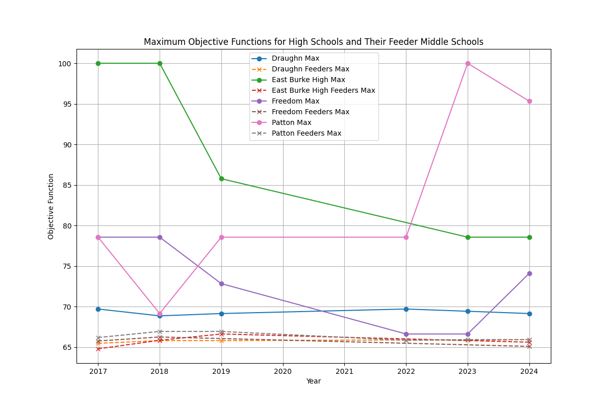
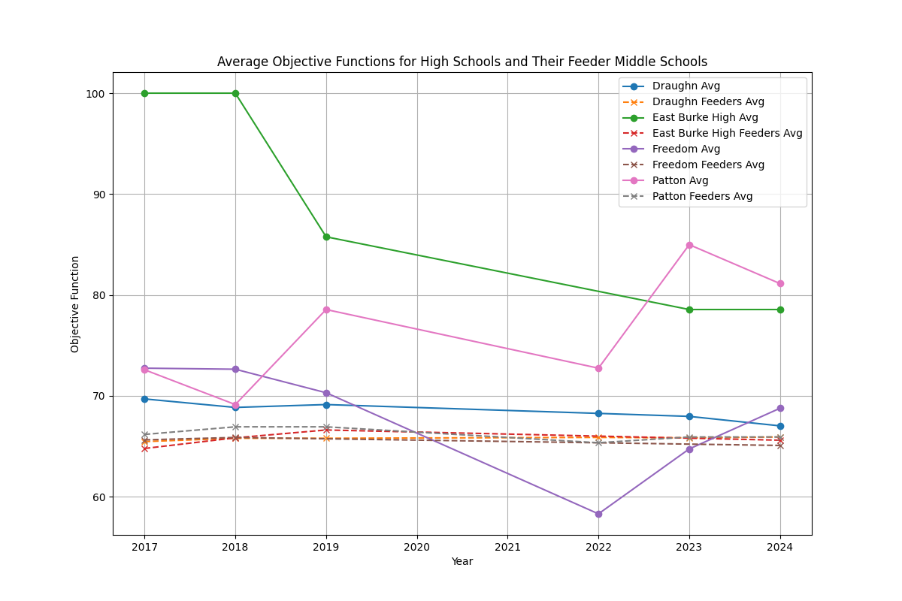
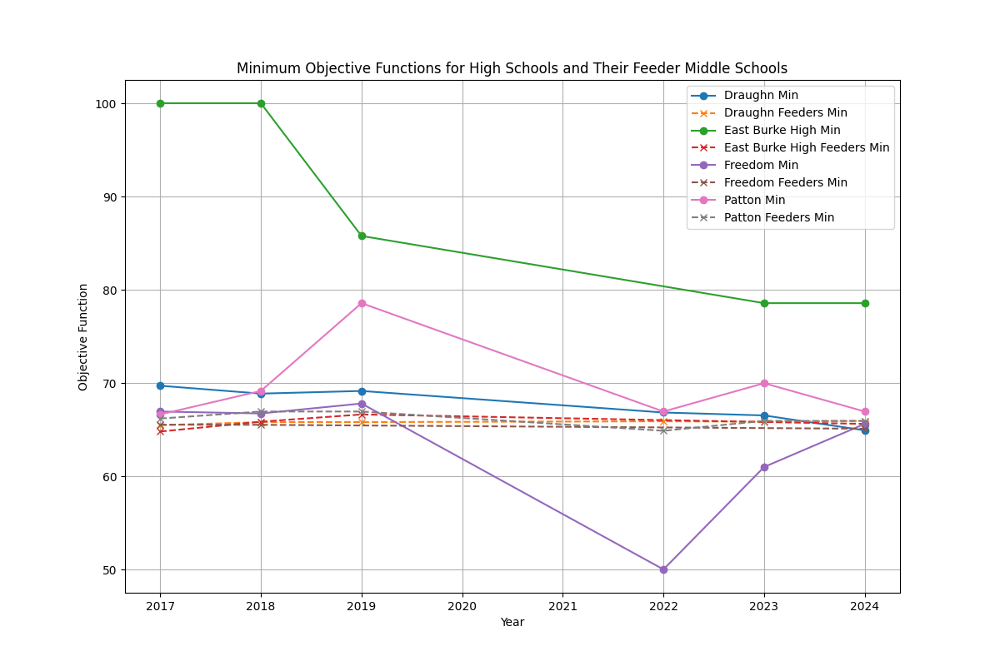

BCPS Bandmasters Analysis
Maximum Objective Functions for High Schools and Their Feeder Middle Schools

Average Objective Functions for High Schools and Their Feeder Middle Schools

Minimum Objective Functions for High Schools and Their Feeder Middle Schools

The data used for this analysis can be downloaded here. These figures come from the 'feeders.py' script.